2mFo-DFc map: one of the most common types of Sigma-A weighted maps generated by modern refinement programs, and the primary map used for manually inspecting and building the model in between rounds of refinement. Fo and Fc are the experimentally measured and model-based amplidues, respectively (Fc here is synonymous with F(model)). m is the figure of merit, and D is the Sigma-A weighting factor. The effect of this combination of factors will be to amplify the regions of the map in which portions of the true model are missing, and to better account for errors in the model-based amplitudes. This is technically a type of difference map, although the term is often used specifically to refer to mFo-DFc maps and similar. Usually viewed at between 1.0 to 1.5 sigma (the latter is the default in Coot).
Alternate conformations: at high resolution (usually significantly better than 2.0Å) the map may be sufficiently detailed to recognize two or more unique conformations for parts of a molecule. The affected residues (here meaning any connected set of atoms, not necessarily amino acids) can be split into multiple conformers with partial occupancy summing to 1. At present these need to be built manually in Coot.
altloc: an identifier in atom records in PDB and mmCIF files, which labels the alternative conformation to which an atom belongs. In the PDB format, this occupies the column to the left of the residue name. For single-conformer models the altloc ID will be blank; otherwise it is usually an uppercase letter starting from "A". Atoms with non-blank altloc IDs will interact with unlabeled atoms and those with the same identifier, but not atoms with a different non-blank altloc.
Anisotropic: not equal in all directions, or in practice, ellipsoidal in shape. In crystallography this is used in two very different contexts:
- Anisotropic B-factors model the atomic displacement as an ellipsoid, which introduces six parameters per atom (versus one for isotropic B-factors). This is more accurate, but refinement of individual B-factors using this parameterization is only possible at atomic resolution (approximately 1.5A or better, depending on data quality and solvent content). At moderate resolution, TLS parameters for groups of atoms can be refined instead.
- Anisotropic data does not extend to the same resolution in all directions; typically, the anisotropy is along the direction of the unit cell axes (or h,k,l in reciprocal space). This is an effect of varying crystal quality. Programs such as phenix.refine and Phaser will perform anisotropic scaling during phasing, refinement, and map generation to compensate for some of the effects of anisotropy, but in some cases the diffraction images will need to be processed specially.
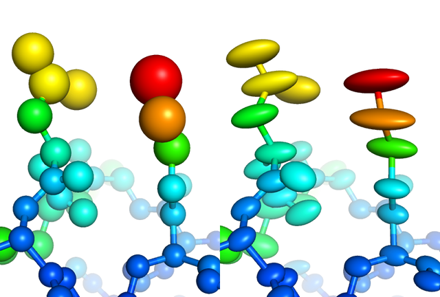
Visualization of individually refined isotropic (left) versus anisotropic (right) B-factors for a high-resolution structure
Anomalous scattering: a phenomenon in which the scattering of X-rays by electrons has both imaginary and real components, leading to breaking of Friedel's law. Anomalous scattering is most pronounced in heavy atoms and is wavelength-dependent; each atom has several "edges" at which the effect reaches a maximum. The change in scatttering at a given wavlength is represented by two numbers, f' (f-prime), which describes the "dispersive difference" or change in the real component, and f'' (f-double-prime), which describes the "anomalous difference" or change in the imaginary component. Anomalous scattering has several uses:
- The result will be small but measurable differences in Friedel pairs (F+ and F-), which can be exploited to locate the heavy-atom substructure and phase the entire structure, as used in SAD and MAD phasing methods.
- Anomalous data may also be used after phases are available to calculate an anomalous difference map, which also shows the location of heavy atoms. Because this map is automatically calculated in phenix.refine and is very useful in completing the model, we recommend refining against anomalous data if available, even if no additional anomalous scatterers were introduced as part of the experiment.
- In addition to map calculation, it is also possible in phenix.refine to refine the anomalous scattering of specific atoms, which may be more accurate than using the non-anomalous scattering factors.
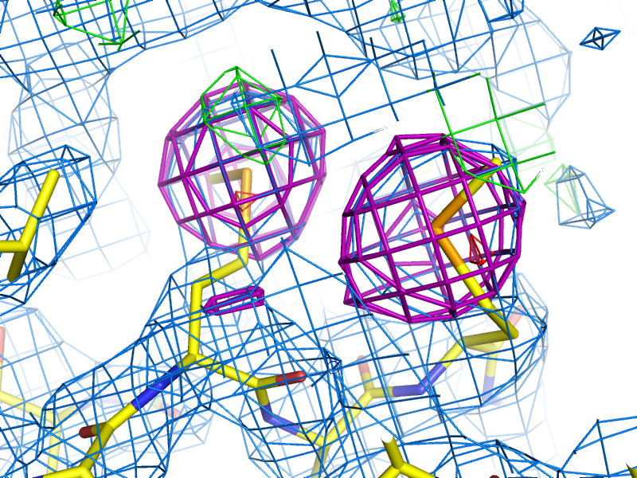
Example of an anomalous difference map, calculated from data collected at the selenium K edge (approximately 0.9792A wavelength) on a selenomethionine-derivatized protein crystal. The anomalous map is rendered in purple, contoured at 3.0 sigma, and clearly shows the positions of the Se atoms in the structure.
ANISOU: a type of record in PDB format, specifying an anisotropic displacement ellipsoid with six parameters. They will immediately follow the associated ATOM or HETATM record. ANSIOU records represent the upper right corner of the symmetric matrix of atomic displacement. ANISOU records will appear in files output phenix.refine any time you use individual anisotropic B-factor refinement or TLS. Anisotropic B-factor is related to isotropic B-factor reported in ATOM record: isotropic B is the mean of the trace of ANISOU matrix divided by 10000 and multiplied by 8*pi^2 and represents the isotropic equivalent of the total B-factor.
B-factors or Atomic Displacement Parameters (ADPs): B-factors or ADPs describe the variability or uncertainty in atomic positions, and (unlike occupancy) have a resolution-dependent effect on the diffraction amplitude. The simplest model for these (isotropic) is a sphere centered around the atomic position, but at high resolution (approximately 1.5A or better) it becomes possible to model them as ellipsoids (anisotropic). At low resolution (worse than 3-3.5A) it may be necessary to refine ADPs for small groups such as entire residues, instead of individual atoms. The total ADPs will also include contribution from larger displacements such as those modeled by TLS refinement and an overall anisotropic ADP for the entire crystal. (Note that in other contexts, "ADP" may instead mean "anisotropic displacement parameter".)
B-factor sharpening: a method to improve map quality (or interpretability) by systematically scaling reflections in a resolution-dependent manner. This may be applied either to the map coefficients directly, or the underlying experimental data. (This is different from the B-factors or ADPs of the actual atoms, but the same term is used because it represents the intensity falloff as a function of resolution.) "Sharpening" actually means to increase the high-resolution amplitudes, but these can also be scaled down, in which case the term "blurring" is more accurate. The map calculation methods in Phenix have an option to apply B-factor sharpening (and it may be done automatically in some contexts), but this can also be done interactively in Coot.
Asymmetric unit: smallest fraction of the unit cell such that applying all crystallographic symmetry operations to it will generate the entire unit cell.
Bijvoet mates: F+ and F-, which are related by Friedel's law, except to the extent that anomalous scattering is present. Also sometimes called "Friedel pairs".
Bulk-solvent correction: Modeling scattering contribution arising from disordered (bulk) solvent. Best available model for bulk-solvent is so-called Flat model, which assumes bulk-solvent electron density to be constant (flat) outside of macro-molecular region. Because the bulk solvent comprises such a large scattering mass in macromolecular crystals (between approx. 20 and 80%), it is essential to account for it. Bulk-solvent mostly contributes to low resolution reflections (approx. lower than 4A) and its contribution to higher resolution reflections is almost zero. Bulk-solvent is accounted for by adding extra contribution (Fbulk) to atomic model structure factors (Fcalc) to form the total model structure factor Fmodel = scale * (Fcalc + Fbulk). Not accounting for bulk-solvent may significantly impact R-factors, refinement and maps.
C-beta deviations: a type of validation outlier specific to amino acid geometry. If the backbone and/or sidechain are misfit, the C-beta atom may be moved far from the ideal position to compensate. A deviation of more than 0.25Å is considered to be a validation outlier. This will not necessarily correspond to chirality or bond angle deviations, but it is considered a significant error and should never be present in the final model.
Clashscore: a validation statistic used in the Molprobity web server and the related validation tools in Phenix (on the command line, the program phenix.clashscore can also be used). It is equal to the number of severe atomic clashes (overlaps greater than 0.4A) per 1000 atoms. A well-refined structure should have a clashscore below 20; clashscores of zero are exceptionally uncommon and very difficult to obtain. Note that while the VDW restraints used in refinement will help prevent the clashscore from increasing, many severe clashes will require manual rebuilding to fix. Clashes can be visualized in KiNG or Coot as "Probe dots"; these will be generated by Phenix as part of validation.
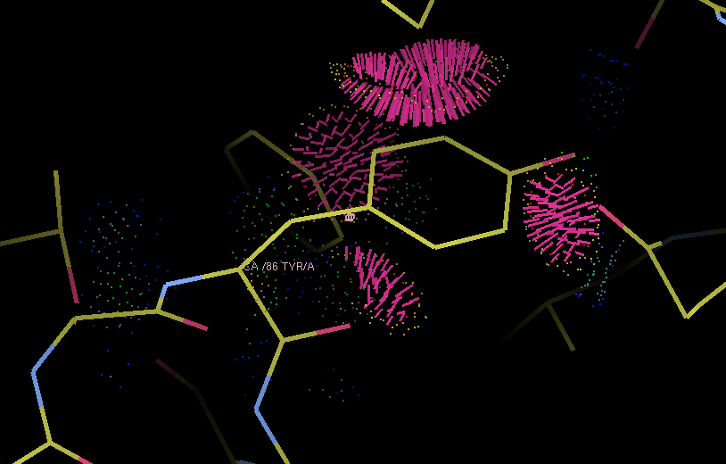
Example of Probe dots for a severely misfit sidechain. The severe clashes (many caused by overlapping hydrogen atoms, not shown) are displayed as pink lines; these count towards the total clashscore.
Completeness (of data): number of measured reflections expressed as a fraction of the total number of reflections theoretically possible in the resolution range of measured data (d_min, d_max). Sometimes resolution range to count theoretically possible reflections may be (d_min, infinity).
Composite omit map: See omit map.
Constraints: In refinement, constraints force specific parameters to be refined together. Examples of this include rigid-body refinement (atomic coordinates constrained), "riding" hydrogen atoms, or grouped ADPs. Since constraints reduce the number of refined parameters, they are particularly useful at low resolution. See also restraints.
Crystallographic Information Format (CIF): a type of structured file format developed specifically for crystallography. Although CIF files may be used to represent any type of data, they are most commonly used in Phenix to define geometry restraints, which are generated primarily by eLBOW. They are also used by the PDB to store reflection or coordinate data, the latter as a substitute for the (archaic) PDB format. Phenix can either convert these files to a more familiar format or use them directly as input in many cases, and phenix.refine can also output both data and model in CIF format. See the overview of file formats for more information.
Density modification (DM): An iterative procedure of applying a priory knowledge about fundamental properties of crystal model (atomic model and bulk-solvent) and density map in order to improve structure factor phases and in some cases amplitudes. Such a priori knowledge includes: atomicity, positivity, noncrystallographic symmetry, bulk-solvent solvent flatness, map connectivety, expected map histogram, etc. Two approaches to DM exist: classical and statistical. DM may dramatically improve maps. For SAD phasing, density modification is essential to resolve phase ambiguity and obtain an interpretable map, but it is also very helpful for other methods.
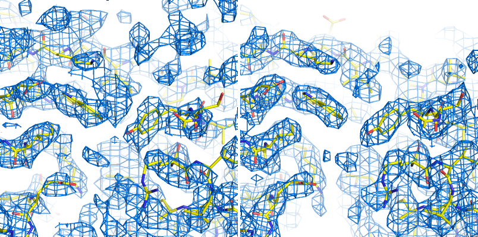
Above: an example of an experimentally phased SAD map (the p9-sad tutorial distributed with Phenix) before and after density modification.
Difference map: any map calculated from the difference in amplitudes between two sets of structure factors (with phases from one of these, or from an external source). This can include an anomalous difference map, which shows the location of anomalously scattering atoms, an isomorphous difference map, which shows atoms present in one crystal but not another, or any of several types of maps which show the difference between the experimental data and the model, of which the mFo-DFc map is the most common. (When used without qualifications, the term "difference map" will often simply refer to the mFo-DFc map.)
Direct methods: a phasing method based on mathematical relationships between reflections, which does not require any additional information beyond the diffracted amplitudes. Direct methods are standard for small-molecule crystallography, but because they require atomic-resolution data and only work for relatively small structures (typically 1000 atoms or less), they are rarely able to phase protein crystal data. However, they can be used to locate heavy atom sites if anomalous data of sufficient quality are available; in Phenix, the program HySS uses direct methods to perform the heavy-atom search. Herbert Hauptman and Jerome Karle won the Nobel Prize in Chemistry in 1985 for their work related to direct methods in reciprocal space. However, direct methods are more intuitively understood in the direct-space formulation, based on the Sayre equation.
Direct summation: a simple and accurate (but computationally inefficient) method for converting between reciprocal-space and real-space data, by summing over all reflections and all atoms (or grid points in the unit cell). It is still widely used in small molecule crystallography, but programs such as Phenix use the FFT method which is far more efficient.
d_min: High-resolution limit.
d_max: Low-resolution limit.
Experimental phasing: umbrella term for a variety of phasing methods based on exploiting the scattering of heavy atoms (the heavier the better, but even endogenous atoms such as sulfur may be used in favorable cases). Includes SAD, MAD, and isomorphous replacement. The majority of new structures are determined by molecular replacement, which is usually significantly easier if a similar structure has already been solved, but experimental phasing is usually the only option for genuinely novel structures, and has the added advantage of avoiding model bias in the resulting phases, especially at lower resolution.
f-prime (f') and f-double-prime (f''): see anomalous scattering.
Fast Fourier Transform (FFT): a computationally efficient method for converting between reciprocal space and real-space data (that is, for converting amplitudes and phases to electron density and vice-versa). It is typically orders of magnitude faster than direct summation. In addition to being used whenever a map is displayed, the FFT is at the core of many algorithms in Phenix (and macromolecular crystallography in general), including the calculation of structure factor target and gradients in phenix.refine.
Figure of Merit (FOM): An approximate measure of phase quality, calculated for each reflection. Range is from 0 to 1, higher being better. The FOM is defined as the expected value (probability-weighted average) of the cosine of the phase error; Blow & Crick showed that if this weight is applied to terms in an electron density calculation, the RMS error in the density is minimized. Although it is sometimes reported in the context of refinement and density modification, it is only useful for evaluating initial experimental phases. A good MAD solution will typically have an FOM greater than 0.4, while a SAD solution should usually be greater than 0.3.
F(model): the structure factors calculated from the model, which in this context also includes the bulk-solvent contribution. Sometimes also referred to as "F(calc)".
F(obs): experimentally observed amplitudes.
Friedel's law: a phenomenon in which pairs of refections related by a center of inversion, (h,k,l) and (-h,-k,-l), have identical amplitudes (but conjugate phases). Anomalous scattering breaks the Friedel symmetry, which can be taken advantage of to locate heavy-atom sites and phase the structure.
Gradient: the first derivative of a function (such as the experimental data or geometry restraints targets), used for minimization.
Grid search: an optimization method that samples a series of values for the refined parameters and picks the best result, as opposed to using gradient minimization or simulated annealing. Grid searches tend to be much slower but the ability to try any arbitrary value gives them a much larger radius of convergence than other methods, and they are especially useful when a pre-defined set of trial values is known. In Phenix, grid searches are used for sidechain rotamer fitting, selection of the relative refinement target weights, and optimization of bulk solvent parameters.
Hendrickson-Lattman coefficients: Phase probability parameters, calculated either experimentally based on heavy-atom methods (SAD, MAD, etc.) or directly from the model, used in density modification and (if experimentally obtained) as additional restraints during refinement. Consists of four coefficients per reflection, which describe a bimodal phase distribution. (If calculated from a model, the distribution will in fact be unimodal, but the same representation is used by convention.)
Insertion code: a single column in the ATOM records of a PDB file, used to supplement the residue number. Insertion codes are used when a specific numbering convention is desired, e.g. to preserve the identity of key residues in related proteins, or to reflect an expressed sequence modified from the genomic equivalent. In these cases, consecutive residues might be numbered 25, 26, 26A, 26B, 26C, 27, etc. When defining atom selections in Phenix, the syntax "icode A" is used; the insertion code can also be combined with the residue number to uniquely identify a residue, using the syntax "resid 26A".
Intensities: the measurements obtained from the diffraction experiment, i.e. the values of spots on the detector. The intensity of a given reflection is proportional to the square of the amplitude, times a scale factor that is determined by photon flux, crystal size, and other experimental properties. Note that because intensities are calculated by subtracting the spot from the background, they may be negative (unlike the amplitude); this is corrected by French-Wilson treatment instead of simply taking the square root of positive intensities and discarding the rest. Because this conversion is performed internally, many of the programs in Phenix accept either intensities or amplitudes as input, although internally the latter are nearly always used.
Interatomic scattering: X-ray scattering caused by the electrons in the covalent bonds between atoms. At very high resolution (d_min < 0.9Å), this is sufficiently distinct from the atomic scattering that it may appear as difference map peaks. In phenix.refine, this can be modeled by additional interatomic scatterers, essentially pseudo-atoms. See Afonine et al. 2007 for more information.
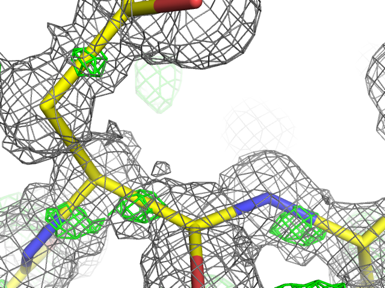
Above: an example of unmodeled interatomic scattering (visible as green mesh representing positive peaks in the mFo-DFc map) in the 0.66Å structure of aldose reductase (`PDB ID 1us0 <http://www.rcsb.org/pdb/explore/explore.do?structureId=1us0>`__).
Isomorphous: geometrically similar, which in the context of crystallography means that the space group is the same and the unit cell parameters are nearly the same between two crystals/datasets. The degree to which the unit cell parameters are allowed to deviate before datasets are considered non-isomorphous may depend on the specific method being used to compare or combine the datasets, but the maximum permissible change in unit cell length is usually 1% (other rules based on resolution are also sometimes used). By default many programs in Phenix use very strict rules for determining isomorphism, although some of these can be modified or ignored.
Isomorphous replacement: an older method for phasing protein crystal structures, in which a native dataset is collected, followed by one or more heavy-atom derivatives that are isomorphous to the native data, and the differences in amplitudes are used to locate the heavy-atom substructure and calculate experimental phases. For many years isomorphous replacement was the standard tool for phasing, but it is very time-consuming compared to SAD or MAD, let alone molecular replacement, and is rarely used now except for very difficult structures. Several variants exist: SIR (single isomorphous replacement), which like SAD requires density modification to resolve the phase ambiguity; MIR (multiple isomorphous replacement); and SIRAS or MIRAS, in which the anomalous signal of the heavy atoms is also employed. In Phenix, isomorphous replacement is performed by the AutoSol wizard.
Isotropic: moving equally in all directions. In crystallography, this is usually used to describe the simplest (and most common) parameterization of B-factors or atomic displacement parameters (ADPs). Only one parameter per atom is refined, the mean atomic displacement u (where B = 8 * pi^2 * u^2). Visually, the B-factor is represented as a sphere. See also anisotropic and TLS.
Kicked map: A faster alternative to omit maps. All coordinates are shaken randomly by a small amount, and the map recalculated; this is done repeatedly and the maps averaged. This can help remove bias and in some cases noise as well. Available in both phenix.refine and phenix.maps. See Praznikar et al. 2009 for details.
Least squares: an older refinement methodology, no longer in widespread use for macromolecular crystallography. A least-squares target assumes that the error in experimental observations takes a Gaussian distribution; modern maximum-likelihood targets do a better job weighting the observations and accounting for sources of error. (The optimization methods used, such as minimization or simulated annealing, are the same regardless of the specific target.) In Phenix, a least-squares target is still used when performing twinned refinement, or refinement against a very small number of reflections.
Log-likelihood gain (LLG): a statistical measure used by Phaser; in the context of molecular replacement, it essentially scores the model placement in comparison to a random model. The LLG should be positive and relatively large if the MR solution is correct.
LLG map: as the name indicates, this is a map calculated using the gradient of the log-likelihood as "structure factors". In the context of SAD phasing, the LLG map shows the difference in anomalous scattering between the current substructure and the true contents of the crystal. This has the effect of amplifying the map around weaker, unmodeled scatterers. In Phaser the process of substructure completion is automated and iterative, but it is also possible to output an LLG map from phenix.refine and phenix.maps. If no anomalous scattering has been modeled, the LLG map will look very similar the conventional anomalous difference map.
Map coefficients: This is simply the Fourier coefficients for an electron density map, in MTZ format. Graphics programs such as Coot (and PHENIX, internally) will perform the Fourier transform automatically to obtain the real-space density. Most programs in PHENIX output map coefficients rather than pre-calculated maps, but the terms are often used interchangeably.
Maximum entropy: A statistical technique for noise removal; in the context of crystallography, it is used to reduce artifacts in electron density maps caused by truncation of Fourier series due to limited resolution or missing data. Not widely used in macromolecular crystallography, but it is helpful in some cases. An implementation is available in Phenix.
Maximum likelihood: The statistical methodology used in target functions for refinement and phasing, in which the probability of the model given the data is maximized. Maximum likelihood is much better at weighting the data appropriately than the previously used least-squares method, and leads to greater sensitivity and improved maps. See McCoy Acta Cryst. (2004). D60, 2169-2183 for an introduction to the method as used in crystallography.
mmCIF: see CIF.
mFo-DFc map: the other most common type of map generated by refinement programs, along with 2mFo-DFc. Colloquially called a "difference map", although technically 2mFo-DFc maps also fall into this category. The mFo-DFc map is usually viewed at positive and negative contours (typically +/- 3 sigma). The positive density indicates features present in the data that are not accounted for by the model; the negative density indicates parts of the model that are not supported by the data. Note that in a well-refined structure some residual difference density is always expected, and interpretation of the maps needs to also take into account the 2mFo-DFC map and local model features.
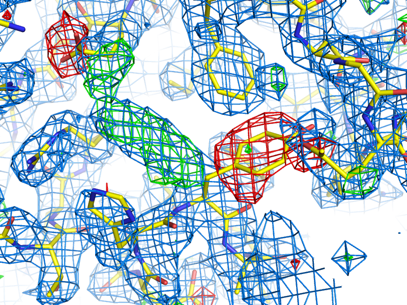
An example of 2mFo-DFc and mFo-DFc difference maps. The 2mFo-DFc map is colored blue and contoured at 1.0 sigma (i.e. 1.0 standard deviations above the mean electron density), and shows where we expect most of the model to be (excluding hydrogen atoms, not included here). The mFo-DFc map is colored green (3.0 sigma) and red (-3.0 sigma); the green mesh shows where atoms are missing in the current model, while the red mesh shows where atoms are present in the model but not the crystal. In this image, the central Tyr rotamer is clearly misfit, as is the carboxyl group of the Glu sidechain in the upper left corner.
Miller array: Any set of reciprocal-space data indexed by h,k,l ("Miller indices"). This can include experimental intensities or amplitudes, phases, weights (such as FOM), Hendrickson-Lattman coefficients, R-free flags, etc. These are the basic unit of reflection data in PHENIX, and may combine multiple columns from the input file (for instance, F and SIGF in an MTZ file will be grouped into a single Miller array containing both amplitudes and sigmas).
MIR: see Isomorphous replacement.
Model bias: a term used to describe the phenomenon in which the phases calculated based on the model will tend to result in an electron density map that resembles the model, regardless of the amplitudes used. Several excellent 2D examples of this can be viewed on Kevin Cowtan's Book of Fourier. In macromolecular crystallography, model bias is often a serious concern due to the limited resolution of most datasets, and maps calculated using model phases need to be interpreted with a healthy amount of skepticism. Methods for minimizing model bias include the calculation of omit maps or the use of experimental phases. At atomic resolution model bias is less problematic, but for low-resolution structures (especially below 3.0A) the effect is both pervasive and difficult to avoid.
Molecular replacement (MR): the most popular phasing method, accounting for more than three-quarters of all new PDB depositions. MR uses known structures to phase (and also provides an initial model for refinement), by determining their rotation and translation in the unit cell of the collected data. Unlike other phasing methods (SAD, MAD, MIR, etc.), MR does not require a special experimental setup or especially high-quality data. The search model may either be a single PDB file, an ensemble of superimposed PDB files of similar structure, or a processed electron density map (containing only the region of interest). The search model is often nearly identical to the target structure (e.g. when the goal is a known protein in complex with a ligand, or a point mutant), but search models with sequence identities as low as 30-40% are usually still easily solved, and significantly lower-identity models may still be used with additional processing (particularly trimming non-conserved loops and the ends of non-identical side chains in Sculptor) if their structures are similar enough. In Phenix, MR is performed by Phaser and various procedures that invoke Phaser.
Molprobity score: an attempt to provide an overall measure of protein structure quality based on the distribution of validation statistics in structures deposited in the Protein Data Bank. The score is defined in (Keedy et al. 2009) as:
MPscore=0.426∗ln(1+clashscore)+0.33∗ln(1+max(0,rota_out−1))+0.25∗ln(1+max(0,rama_iffy−2))+0.5
with clashscore as defined above, rota_out is the percentage of sidechains with rotamer outliers, and rama_iffy is the percentage of amino acids not in the "favored" region of the Ramachandran plot. The resulting score is on the same scale as resolution in Angstroms, so a structure with a MolProbity score of 2.4 is similar in quality to structures in the PDB at 2.4Å. The score should usually be smaller than the actual resolution, the lower the better.
MTZ: a binary format for reflection data, developed as part of the CCP4 suite. It can contain essentially any combination of data commonly used in refinement, including amplitudes or intensities (with or without sigmas), phases, Hendrickson-Lattman coefficients, and various integer arrays (including R-free flags). Each one-dimensional data array in an MTZ file has a unique "column label", although Phenix will often work with groups of these arrays, for instance grouping "F" and "SIGF" together if they appear sequentially in the file. MTZ files are usually the prefered format for reflections files, as they are very versatile, reasonably compact, and supported by a wide range of modern software, including Phenix, CCP4, and Coot. See the overview of file formats for more information.
Multi-wavelength Anomalous Difraction (MAD): a popular method for experimental phasing using heavy atoms. MAD takes advantage of the tunability of synchrotron beamlines to collect data for (ideally) a single crystal at multiple wavelengths (at least two, but rarely more than four), clustered around the anomalous "edge" of the heavy atom of interest (most commonly selenium, but any element whose edge is accessible with synchrotron radiation is suitable, including many heavy metals). The differences in anomalous scattering around the edge allow calculation of phase angles without the phase ambiguity present in SAD experiments, although density modification will usually still be necessary to obtain an easily interpretable map. Because of the sensitivity to small differences in f' and f'', which diverge significantly from theoretical values around the anomalous edges, these values should be experimentally measured at the beamline (or suitable approximations obtained from beamline staff). Although very powerful, MAD phasing has declined somewhat in popularity relative to SAD because of the more limited choice of heavy atoms, the difficulty of avoiding radiation damage, and the requirement for a synchrotron beamline, but it is still a much easier method than isomorphous replacement. In Phenix, MAD is performed by the AutoSol wizard, using the underlying program SOLVE.
Non-crystallographic symmetry (NCS): Symmetry within a crystal that is independent of the lattice type; this is very common in biomolecules, especially homo-oligomeric proteins. Information about NCS can be used to great advantage during density modification, and as additional restraints on the conformation of related groups during refinement. (PHENIX does not currently support NCS constraints, which force related molecules to be identical.) NCS is most easily identified by comparing chains in a model, but can also be detected by analysis of heavy-atom sites or even electron density; several tools exist in Phenix for this purpose, and it can be performed automatically by the AutoSol wizard and phenix.refine. See the refinement FAQs for additional information about the use of NCS restraints.
Occupancy: an attribute of atoms in a structure, equal to the fraction of unit cells in which the atom occurs in the given position. High-resolution structures (usually 1.6A or better) will often need occupancy refinement for sidechains that occur in more than one conformation, or for ligands that are not 100% bound. The occupancy should never be set to zero in a deposited structure. Note that B-factor and occupancy are correlated in practice and the effects of each may be difficult to tell apart; however, partial occupancy has an equal effect at any resolution, unlike the B-factor whose effect is resolution-dependent.
Omit map: a map generated by deleting part of the structure (for instance, a bound ligand) and recalculating phases and F(model). This almost always some procedure to remove phase bias, either by iterative re-phasing from a modified F(model), refinement of the modified structure (especially with simulated annealing), or rebuilding. A variant, the composite omit map, stitches together the contribution of many individual omit maps, which collectively omit all atoms. Phenix has a standalone composite omit map program that performs most of these procedures; the iterative-build omit map can be calculated using the AutoBuild wizard. A more detailed explanation of options is available in the frequently asked questions list. The removal of phase bias is discussed in Hodel et al. 1992 and Pražnikar et al. 2009.
Overfitting: Optimization of R-work at the expense of other quality metrics, especially R-free. The most obvious indication of overfitting is divergence of R-work and R-free, which ideally should decrease in sync throughout refinement. In most cases, the solution is to add or tighten restraints, or reduce the number of refined parameters.
Phasing: determination of the missing phase angles to accompany the experimentally measured amplitudes. Obtaining the phases allows calculation of the Fourier transform of the reflection data to obtain the electron density into which a model can be built. Several methods for reconstructing the phases are possible (covered elsewhere in this document): Molecular replacement, experimental phasing (SAD, MAD, or isomorphous replacement), and direct methods (which is not generally useful for most macromolecular structures). For crystals that are essentially isomorphous to a known structure, the previously determined phases (often in the form of a model) can also be used directly.
Radius of convergence: a term used to describe how far a model can be improved from a given starting point. The larger the radius of convergence, the worse a starting model can be without stalling refinement, and the better the result. The radius of convergence is affected by multiple refinement options, including the choice of strategy (for instance, rigid-body refinement has a very large radius of convergence for crude models), the optimization target, and the optimization method. Simple gradient minimization usually has a smaller radius of convergence than simulated annealing and grid search methods (such as rotamer fitting), but it is usually significantly faster to run. When a structure is described as being "beyond the radius of convergence" of a program, this means that it cannot be improved by automatic methods. Programs such as MR-Rosetta are designed to have a very wide radius of convergence, although at the cost of long run times.
Ramachandran plot: a two-dimensional graph of the phi,psi angle combinations of their allowed backbone; also refers to the expected/allowed distribution of points on this graph. This distribution is dictated by steric constraints on the backbone conformation, originally identified by Ramachandran et al. (1963) J Mol Biol 7:95-99. Because the Ramachandran plot is an essential validation metric, phi and psi are typically left unrestrained during refinement. In the Molprobity server and the Phenix validation tools, the plot is divided into "favored", "allowed", and "outlier" regions, based on the distribution of angles in a set of 8000 high-quality structures; a well-refined structure should have 98% of residues favored, and less than 0.2% outliers, although at lower resolutions it may be difficult to obtain these statistics. Note that the expected distribution varies depending on residue type and environment; in the current version of Phenix, six different distributions are used.
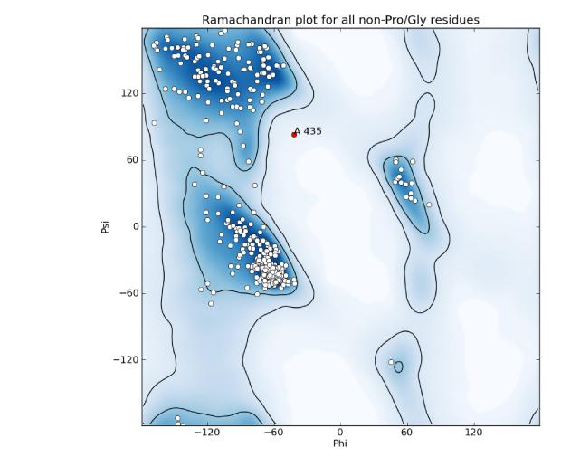
A representative Ramachandran plot, with outliers shown in red; the contours define the borders of the favored and allowed regions.
Real space: coordinates in the crystal (relative to an origin which may be somewhat arbitrary depending on the space group). Examples of real-space data are model coordinates and electron density maps.
Real-space refinement: coordinate refinement using an electron density map (usually the 2mFo-DFc map) as the experimental target. This may be done globally or locally, and with any optimization method, including gradient minimization or grid search (such as rotamer fitting). It is much faster than reciprocal-space refinement, but has the disadvantage of depending on phases being accurately calculated. To avoid biasing R-free, the reflections flagged as the test set should be left out of the map calculation. (This is done automatically when run as part of phenix.refine.)
Reciprocal space: a mathematical construction describing the positions of reflections in a "reciprocal lattice", whose parameters are directly related to the crystal lattice parameters; the reciprocal lattice vectors are perpendicular to real-space planes. The dimensions in reciprocal space are expressed in terms of 1/Angstrom, i.e. the reciprocal of the resolution for a given reflection, and positions are indexed by the Miller indices h, k, l. The process of data collection can be thought of as sampling reciprocal space, which rotates along with the crystal lattice.
Reflection: an individual data item in reciprocal space, usually used to describe a single amplitude or intensity.
Residual map: see Difference map.
Resolution factor: this number controls the spacing of the grid used for map calculations, which is approximately defined by d_min*resolution_factor (although the final grid dimensions will be adjusted based on the requirements of the FFT algorithm). The lower the resolution factor, the more finely spaced the map grid. A spacing of 1/3 or 1/4 is most common, with the latter preferred for display purposes.
Restraints: In refinement, restraints keep specific independent parameters from diverging too far. At most resolutions, because of the limited resolution of the data basic geometry restraints (bonds, bond angles, dihedral angles, chiral centers, planar groups, and VDW interactions) and ADP similarity restraints will be used, usually taking the form of a simple harmonic potential, mimicking a spring pulling parameters back to ideal values. Depending on the specific structure and data, additional restraints may be used, for instance between related molecules (NCS or a reference structure). Restraints do not reduce the number of refined parameters, but are essential to maintain proper geometry and prevent overfitting. However, they become less necessary as resolution increases, and restraining a high-resolution model too tightly will actually make it worse. See also constraints.
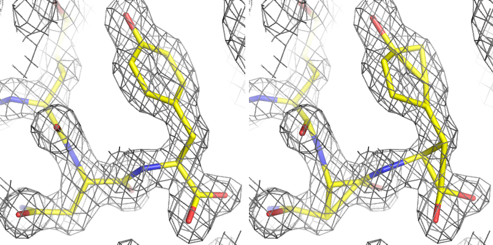
Above: an example of refinement with and without geometry restraints at moderate resolution (1.8Å); the molecular geometry is severely distorted if dictated by the experimental data alone.
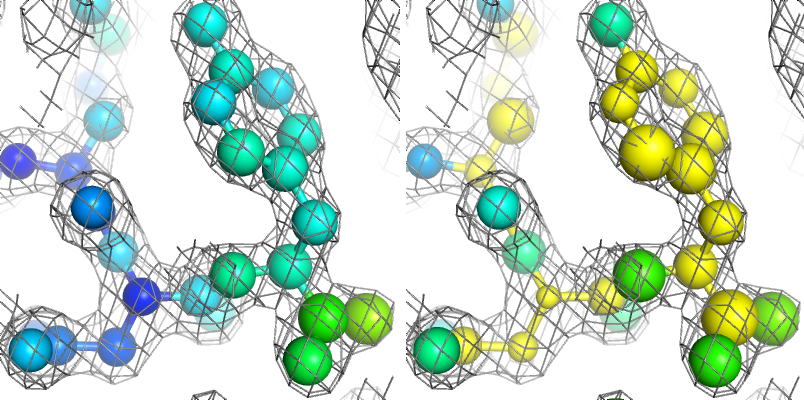
Above: the same example with and without ADP restraints (shown as spheres, and colored by isotropic B-factor), showing unphysical distribution of B-factors when restraints are not used.
R-factor: Crystallographic residual; for calculating model-data agreement, it is equal to sum(abs(abs(Fobs)-abs(Fcalc))) / sum(abs(Fobs)). R-merge, R-sym, etc. are calculated similarly for intensities, over multiple redundant observations instead of calculated values. Generating Fc at random will typically result in an R-factor of 0.55 for an untwinned structure, which is therefore the threshold for determining if a model is placed correctly. (Note that in practice, molecular replacement solutions often have higher starting R-factors, but these will rapidly drop during refinement if the solution is correct. Also note that in the presence of twinning, a lower threshold for randomness is expected.)
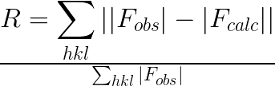
R-free: R-factor calculated from reflections not used in refinement, typically 5-10% of the data or 1000-2000 reflections (in statistical terminology this is called "cross-validation"). If the refinement was parameterized appropriately, the R-free should be reduced along with the R-factor for the "working" set (R-work), although it will always be a higher value. An increase in R-free indicates an incorrect optimization, even if R-work decreases. A large spread between R-work and R-free is a primary symptom of overfitting. See Brunger AT (1992) Nature 355:472-475 for full rationale.
R-free flags: an integer array that marks each reflection for use in either refinement or the calculation of R-free. Usually a set of R-free flags is generated at the beginning of the model-building and refinement process, and used throughout (usually as part of a single MTZ file including experimental data); programs such as AutoSol, AutoBuild, and phenix.refine will do this automatically if no flags have previously been generated. Extension of an existing set of flags to higher resolution, or transfer to an isomorphous dataset, can be done by the reflection file editor.
Riding hydrogens: hydrogens whose coordinates and B-factors are defined by the covalently bonded heavy atom, as opposed to individual refinement. Except for sub-atomic resolution structures, the riding model is almost always the appropriate one, and leads to less overfitting.
Rigid-body refinement: coordinate refinement using rigid blocks of atoms, typically an entire domain or chain (or possibly the entire contents of the asymmetric unit). Used at the beginning of refinement after a molecular replacement search, where the fit to data may be crude and a large radius of convergence is desired. (Note that some rigid-body refinement is also performed directly by Phaser.)
Rotamer: A well-defined unique combination of dihedral angle values in a group of atoms; the term is almost always used in reference to amino acid sidechains, although RNA backbone angles are also rotameric. The sidechain rotamers used in Phenix are extracted from a set of high-quality, high-resolution structures (the Top500 database). The vast majority of sidechains in a finished structure should be recognizably rotameric unless the density very clearly supports an outlier conformation, and flagging of rotamer outliers is an important part of validation. Because the standard geometry restraints and minimization methods often do a poor job moving sidechains into rotameric positions, a separate rotamer-fitting step is available in phenix.refine.
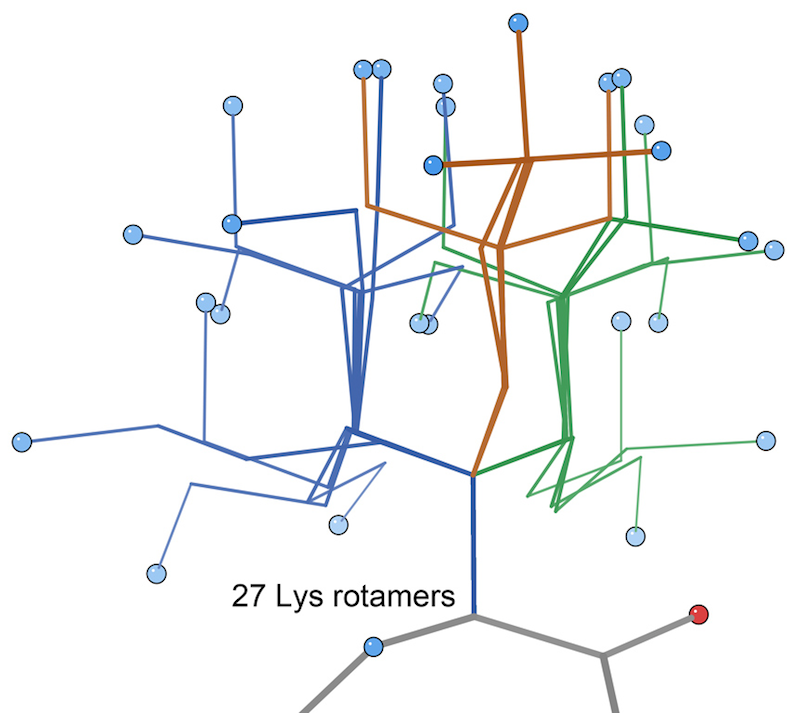
Above: the sidechain rotamers of lysine defined by MolProbity, based on conformations found in the Top500 database.
Rotation function (RF): the first part of molecular replacement, which establishes the rotational orientation of the search model in the crystal. This is independent of the exact space group in some cases, e.g. the same rotation will be correct whether the space group is P6(2) or P6(4). The resulting Z-score is only a weak indicator of whether the rotation is correct or not, i.e. a high Z-score does indicate a correct rotation, but a rotation with a low Z-score may well be correct too.
Scattering factors: values describing the scattering of X-rays by a given atom type, related to the number of electrons in the atom or ion. These are used in refinement to calculate the expected electron density and structure factors given a set of atomic parameters (XYZ coordinates, B-factor, occupancy, and possibly anomalous scattering). A variety of parameterizations of scattering factors are available in Phenix, but the most commonly used (for X-ray refinement) is called "n_gaussian". Scattering factors for neutron diffraction experiments (where the nucleus, rather than the electrons, is responsible for the scattering) are also available.
Sharpening: see B-factor sharpening.
Sigma: a common shorthand term for standard deviation. May occur in several contexts in macromolecular crystallography, most commonly referring to the sigma-scaling of maps.
Sigma-A weighting: a method of weighting difference map coefficients to more accurately account for errors in the model. This is standard practice in macromolecular crystallography, as it leads to improved maps. A sigma-A weighted map will typically described as "2mFo-DFc" or "mFo-DFc", with the "D" being the relevant value ("m" is the Figure of Merit for each reflection). The maximum likelihood target in Phaser is a derivation of this methodology. See Read, R.J.: Acta Cryst. A42 (1986) 140-149 for original derivation.
Sigma scaling: a method of scaling electron density maps in real space, in which the statistics for the entire unit cell are calculated, and the grid point values are set to the number of standard deviations (sigmas) from the mean value. Although this can be thought of as crude normalization, and the maps are commonly viewed at standard sigma levels (e.g. the Coot defaults of 1.5 sigma for 2mFo-DFc and +/- 3.0 sigma for mFo-DFc maps), the sigma values are actually very subjective, depending greatly on solvent content and model quality.
Simulated annealing: An optimization method which simulates heating up a system and slowly cooling it down, as a way of escaping local energy minima trapping simple gradient-based minimization methods. In crystallography, this means running a simple molecular dynamics simulation starting at very high temperatures (2500-5000 K), with the agreement with X-ray data included as an additional pseudo-energy term. Especially useful for poorly built structures early in refinement, and as a method to remove phase bias (e.g. for omit maps). In PHENIX, both Cartesian and torsion-angle dynamics are available; the latter is intended for low-resolution refinement as it uses fewer parameters. However, in practice Cartesian simulated annealing in phenix.refine often outperforms torsion-angle dynamics. Originally described in Brunger (1997).
Single-wavelength anomalous diffraction (SAD): probably the most popular experimental phasing method currently in use, SAD requires only a single wavelength from one crystal. The experimental phases themselves will be of poor quality because the SAD experiment cannot resolve the phase ambiguity, but density modification will lead to a significantly improved map in most cases. SAD is often performed with selenomethionine-incorporated protein, but any anomalously scattering atom (including sulfur, if the data are of very high quality) may be used. In Phenix, SAD may be performed by either the AutoSol wizard or Phaser-EP, although the latter only calculates initial phases and completes the heavy-atom substructure, whereas AutoSol will also perform initial heavy-atom location, density modification, and preliminary model-building.
Skew: Statistic derived from the distribution of electron density values in an experimentally phased map. The skew describes the deviation from a Gaussian distribution; a correct map will have a slight skew towards higher values. A skew above 0.2 is usually indicative of successful phasing.
SMILES string: a simple textual representation of molecular structure, originally developed by Daylight Chemical Information Systems and now in wide use by the chemistry community. Although SMILES strings do not encode coordinates, unlike PDB files they uniquely encode the connectivity of molecules, and can optionally even specify chirality. They are therefore one of the prefered input formats for eLBOW. As an example, the SMILES string for benzene is c1ccccc1.
Special positions: locations on crystallographic symmetry elements. For macro-molecular structures special positions are always on rotation axes (2, 3, 4, 6-fold rotations); for small-molecule structures special positions may also be on centers of inversions, mirror planes, and roto-inversions. Atoms on special positions are restricted in the way they can move during refinement. For example an atom on a 2-fold axis can only move along the axis. It is also possible that atoms or molecules are disordered around special positions; in this case the occupancy found in the PDB file is usually 1/N or smaller, where N is the order of the rotational symmetry.
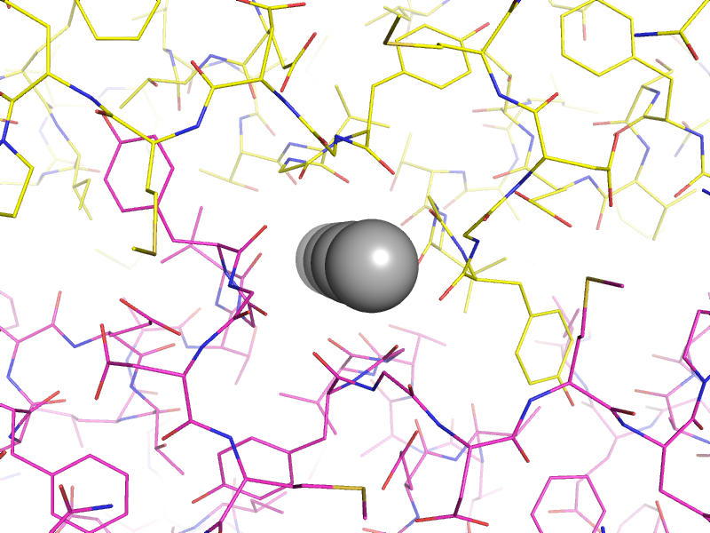
Above: an example of atoms on special positions in a potassium channel structure (`PDB ID 1p7b <http://www.rcsb.org/pdb/explore/explore.do?structureId=1P7B>`_). The potassium ions (grey spheres) lie on a two-fold crystallographic symmetry axis, with the asymmetric unit and symmetry mate shown as yellow and magenta lines respectively.
Structure factors: the individual reflections corresponding to the Fourier transform of the electron density of the crystal. Both F(obs) and F(model) are examples of structure factors, based on the true and model-based electron density, respectively. The term encompasses both the amplitudes and phases, although for the experimental structure factors, only the amplitudes can be measured directly. The amplitude alone is usually represented by the "abs()" operator.
Substructure: in the context of experimental phasing, the substructure consists of heavier elements whose sites can be identified based on their anomalous scattering (or in isomorphous replacement experiments, this may be done using the isomorphous differences between native and derivative datasets), and subsequently used to phase the entire structure. For instance, this might be selenium atoms in SeMet residues, endogenously bound metal ions, heavy metals or halide atoms soaked into the crystal, or just the native sulfur or phosphorous atoms in proteins and nucleic acids. (In some contexts the term "substructure" may be used interchangeably with "heavy atom sites".) However, only those atoms with measurable scattering are important for phasing purposes. Depending on crystal contents and experiment type, the useful substructure can be anywhere from a single atom to hundreds of atoms. In Phenix, and in particular the AutoSol wizard, the substructure is initially identified by HySS and extended by Phaser.
Target function: in the context of refinement, this is the function that assesses the fit to experimental data (usually amplitudes). Older programs used least-squares (LS) targets, but modern refinement programs usually use maximum-likelihood (ML) targets, which are more robust in the presence of model error and incompleteness. In phenix.refine, the available target functions are ML, MLHL (amplitudes plus experimental phases), and LS (for refinement of twinned structures). Technically, any restraints used also specify a target function for minimization, although the term is not usually used in this context.
Target weights: since the experimental target function is normally combined with the geometry or B-factor restraints, a scale factor is applied. This can be automatically determined by comparing the gradients of each function, or by a grid search of empirically estimated values.
Translation function (TF): the second step of molecular replacement, which starts from the output of the rotation function and determines the exact position of the search model within the unit cell. The TF may be significantly more time-consuming than the RF, because a separate translation search must be run for each possible orientation indicated by the RF, but it can resolve space-group ambiguity, and the resulting Z-score (TFZ), in combination with the LLG, will usually be sufficient to determine whether the solution is correct or not.
Translational non-crystallographic symmetry (TNCS): a common crystal pathology in which the unit cell size is effectively doubled due to a near-symmetric translation operator which breaks higher symmetry. The effect of this on data is to double the number of reflections, with the additional reflections systematically weaker. TNCS can be detected by this signature, and by the presence of a large off-origin peak in the Patterson map; Xtriage is used in Phenix for this purpose. Although not as severe as twinning, TNCS can cause problems during phasing and (to a lesser extent) refinement, because it breaks some of the assumptions used in the maximum-likelihood equations used in Phenix. This is now handled by Phaser for molecular replacement and SAD phasing. See Zwart et al. (2008) Acta Cryst D. 64:99-107 for more information.
Translation, Libration, and Screw (TLS): A way of describing anisotropic motion for rigid groups of atoms which move collectively in the crystal. These are usually separate chains, or domains in a flexible protein, but there is no restriction on the size of groups. Refining TLS parameters will result in all atoms that are part of a TLS group being treated as anisotropic - in this sense, it is essentially constrained anisotropic refinement. Because it only adds twenty parameters per group, TLS refinement is suitable for almost any resolution. (Note that while phenix.refine allows you to perform either TLS or anisotropic refinement for separate atom selections within a single run, the two methods may not be combined, as they effectively refine the same parameters.)
Twin law: an operator describing the relationship between distinct reflections due to twinning. Each lattice has a limited set of permitted twin laws, which can be identified by Xtriage. These are typically represented in terms of Miller indices, for example, the R3 space group has the allowed merohedral twinning operator -h-k,k,-l, which signifies that the h,k,l reflection will be actually be overlapped in reciprocal space with -h-k,k,-l. The twin law can be used during refinement if necessary, although some caution should be taken when doing this. In rare cases a crystal can be a multiple twin, with more than one twin law. Note that phenix.refine does not currently support multiple twin laws.
Twinning: a common crystal pathology in which different regions of the crystal assume different orientations. In the simplest case, epitaxial twinning, this is simply two or more crystals stacked together, without superimposed lattices, and the result is multiple distinct lattices visible in the diffraction pattern, which can often be handled by data processing programs. Merohedral twinning preserves the overall lattice symmetry, so that the diffraction spots contain the contribution of two or more "twin domains" which cannot easily be disambiguated. Small twin fractions (perhaps 10% or less) are not usually problematic and can easily be overlooked. Larger fractions, up to 50% ("perfect twinning"), can make experimental phasing very difficult, and result in abnormally high R-factors and poor map quality during refinement. This can be handled by refining with a twin law, although this needs to be performed with caution. Twinning is usually easily detected by the systematic deviation from expected intensity statistics; in Phenix, Xtriage is the program used to diagnose and analyze possible twinning. See Zwart et al. (2008) Acta Cryst D. 64:99-107 for more information.
Wilson plot: a plot showing the average intensity value for each resolution bin (typically using a relatively large number of bins, e.g. 30). Among other things, the Wilson plot shows the falloff of intensity with resolution due to the B-factors of the atoms, and can be used to determine an approximate overall B-factor for the data. Because of the non-random distribution of atoms in the unit cell, the Wilson plot has a distinctive appearance, especially for protein and nucleic acid structures, and deviations from the expected plot may indicate data pathologies.
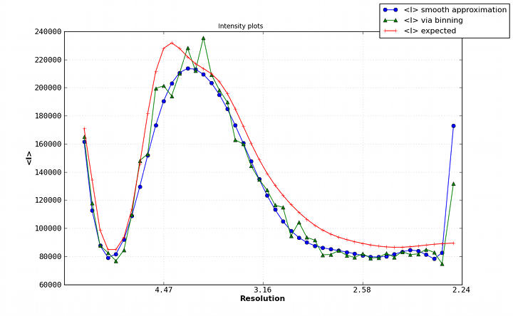
A typical Wilson plot for a protein dataset (PDB ID 3dnd).